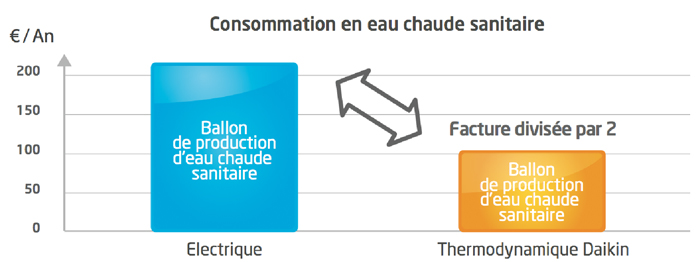
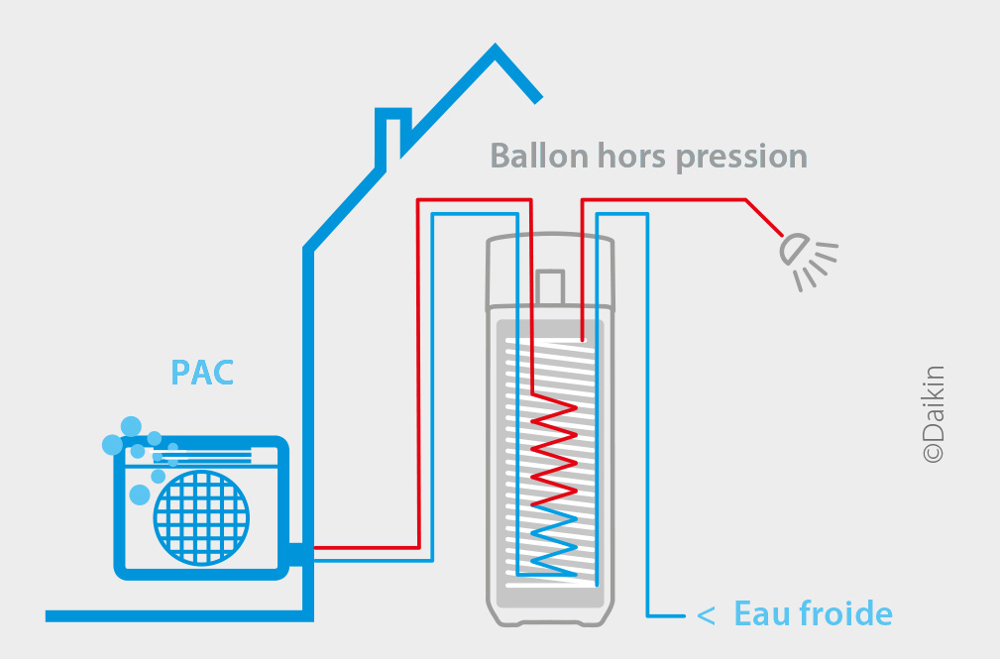
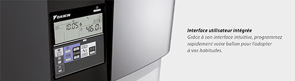
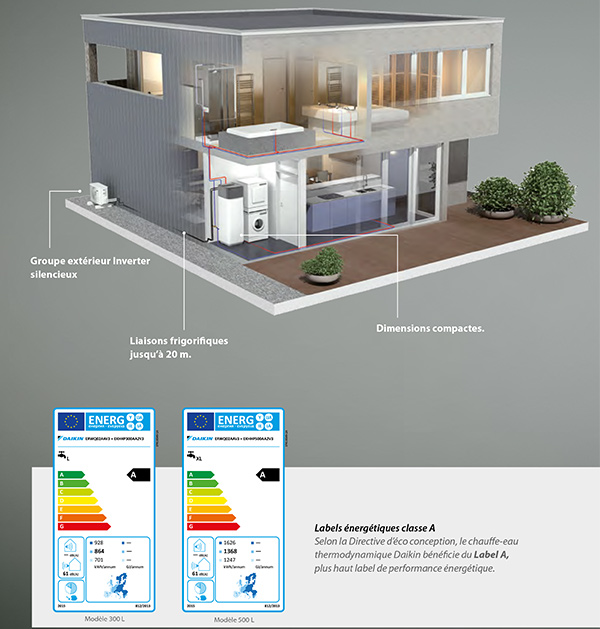
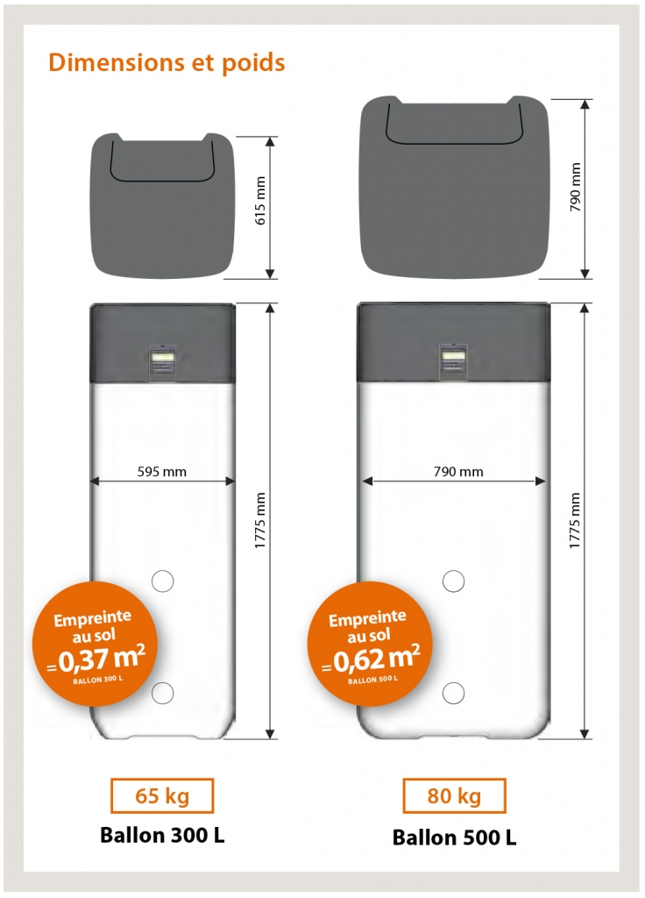
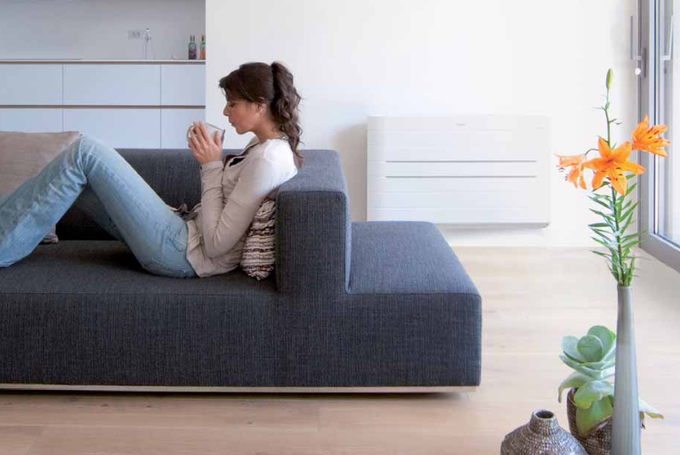

Les chauffe-eau thermodynamiques sont essentiels pour chauffer l'eau domestique dans les maisons. En effet, ces appareils thermiques offrent un confort unique par rapport à un cumulus, un système de production instantanée ou un modèle classique de chauffe-eau.
Les chauffe-eau thermodynamiques peuvent réduire la consommation d'énergie de 3 à 4 fois. Son prix est toutefois assez cher en fonction du modèle que vous choisirez, mais cela reste un investissement rentable sur le long terme. Il s'agit donc d'une solution efficace qui vous permet d’économiser considérablement et répondre à la demande en eau chaude sanitaire de toute la maison.
La consommation du chauffe-eau thermodynamique est presque trois fois inférieure à celle des réservoirs d'eau électriques traditionnels. La pompe à chaleur canalise l'énergie présente dans les calories de l’air, puis la transfère au réservoir d'eau où l'eau chaude est stockée.
Malgré son prix onéreux, les chauffe-eau thermodynamiques restent avantageux sur plusieurs points dont les économies faites concernant les coûts d'électricité, le respect de l’environnement par l’usage de l’énergie renouvelable.

Les ballons thermodynamiques de chez Klimat. Fr présentent beaucoup d’avantages en tant que chauffe-eau électrique dont le label A et sa moindre consommation en électricité nettement inférieure à un chauffe-eau électrique classique, car il se compose de 2 technologies différentes :


Les offres de ballons thermodynamiques Daikin de chez Klimat. Fr ont été conçu avec des fonctions pratiques pour le quotidien des particuliers : la fonction silencieuse, la fonction économique, la fonction boost pour accélérer le chauffage de l’eau et la fonction tranquillité.
Tous nos modèles sont d’ailleurs compatibles avec les tarifs heure pleine/heure creuse, Tempo ou les tarifs EJP.
De ce fait, en plus d’amoindrir au maximum la consommation du chauffe-eau thermodynamique en électricité vous serez éligible au crédit d'impôt pour la transition énergétique et votre chauffe-eau thermique sera amorti dans les 2 ans.
Pour en savoir plus, nous vous invitons à prendre contact avec notre service client.

Contrairement aux réservoirs d'eau traditionnels, l'eau chaude que vous consommerez n'est pas stockée dans le réservoir de stockage d'eau (le ballon accumulateur). Aussi, en raison de la technologie dite de condensation directe, le fonctionnement du chauffe-eau thermique signifie qu'il sera chauffé immédiatement lors du passage dans le ballon. Il s'agit de l'eau chaude produite semi-instantanément.


Les chauffe-eau thermodynamiques ont un rapport performance globale / consommation d'énergie élevée. C’est pourquoi un professionnel avertit comme chez Klimat.Fr, une société spécialisée en climatisation en Essonne conseille à ceux qui souhaitent installer un système de chauffe-eau moderne de remplacer leur traditionnel ballon électrique pour économiser la moitié de l'électricité dépensée au quotidien.
En effet, ce n'est plus une résistance qui peut chauffer l'eau domestique, mais un système de pompe à chaleur intégré
La combinaison pompe à chaleur + ballon accumulateur + l’absence d’équipement tel qu'un vase d'expansion facilite grandement l'installation de chauffe-eau thermodynamique. Sa compacité lui permet également d'être installé dans des espaces restreints.
Ainsi, quelle que soit la dimension de votre logement, vous pouvez profiter des meilleures marques de chauffe-eau thermodynamique pour un confort de qualité pour vous et votre famille.
Avant de faire installer un chauffe-eau thermodynamique, certaines normes doivent être évaluées. Les coûts d'investissement, la zone géographique, les matériaux d'isolation et le nombre de personnes vivant dans la maison détermineront le mode d’installation de votre chauffe-eau thermodynamique. L'expertise de Klimat.fr répond au mieux à vos exigences et vos besoins dans l’immédiat ou selon la date que vous fixerez.
Et si vous n'avez toujours pas trouvé le système de chauffage domestique le plus économique que vous souhaiteriez installer chez vous, n'hésitez pas à demander conseil à notre service de professionnels expert en confort thermique moderne pour trouver l'équipement le plus adapté !